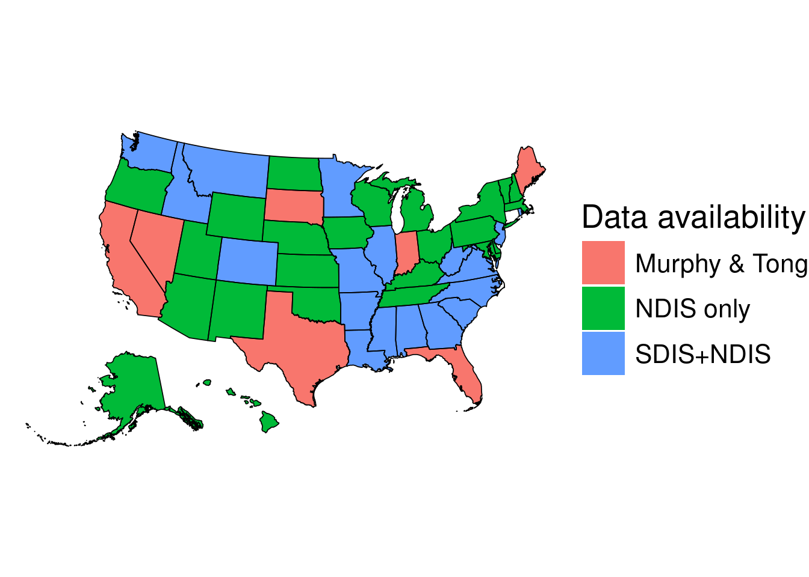
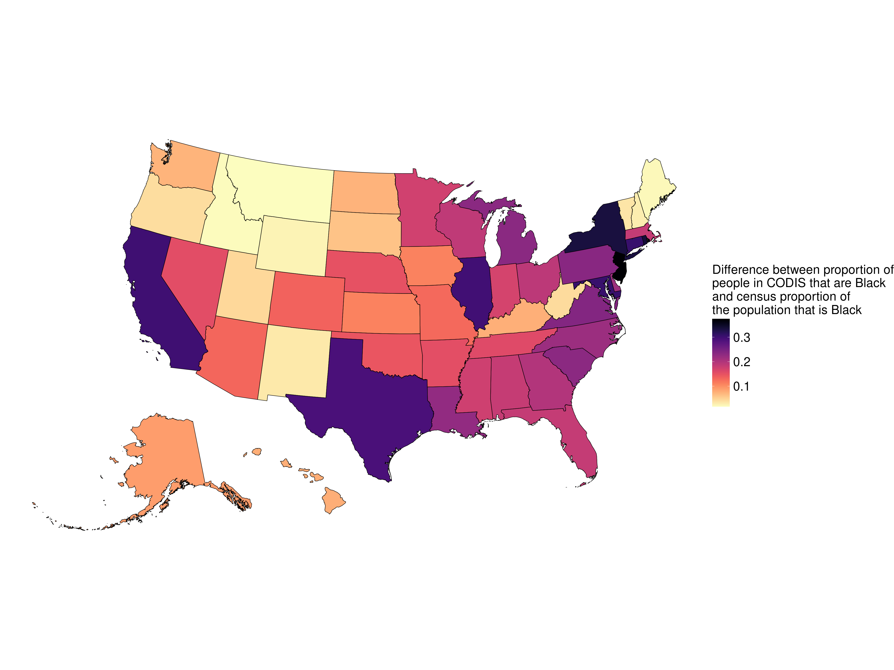
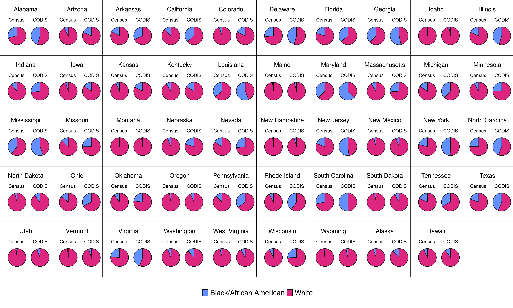

Regression to predict CODIS database proportions
Hannah Van Wyk
2024-09-06 15:09:11
Last updated: 2024-09-06
Checks: 6 1
Knit directory: PODFRIDGE/
This reproducible R Markdown analysis was created with workflowr (version 1.7.1). The Checks tab describes the reproducibility checks that were applied when the results were created. The Past versions tab lists the development history.
Great! Since the R Markdown file has been committed to the Git repository, you know the exact version of the code that produced these results.
Great job! The global environment was empty. Objects defined in the global environment can affect the analysis in your R Markdown file in unknown ways. For reproduciblity it’s best to always run the code in an empty environment.
The command set.seed(20230302) was run prior to running the code in the R Markdown file. Setting a seed ensures that any results that rely on randomness, e.g. subsampling or permutations, are reproducible.
Great job! Recording the operating system, R version, and package versions is critical for reproducibility.
Nice! There were no cached chunks for this analysis, so you can be confident that you successfully produced the results during this run.
Using absolute paths to the files within your workflowr project makes it difficult for you and others to run your code on a different machine. Change the absolute path(s) below to the suggested relative path(s) to make your code more reproducible.
| absolute | relative |
|---|---|
| /home/hannah/git/PODFRIDGE/data/populations_states.csv | data/populations_states.csv |
| /home/hannah/git/PODFRIDGE/data/CODIS_data.csv | data/CODIS_data.csv |
| /home/hannah/git/PODFRIDGE/data/NDIS.csv | data/NDIS.csv |
| /home/hannah/git/PODFRIDGE/data/SDIS.csv | data/SDIS.csv |
| /home/hannah/git/PODFRIDGE/data/Murphy_FOIA.csv | data/Murphy_FOIA.csv |
Great! You are using Git for version control. Tracking code development and connecting the code version to the results is critical for reproducibility.
The results in this page were generated with repository version a492d9c. See the Past versions tab to see a history of the changes made to the R Markdown and HTML files.
Note that you need to be careful to ensure that all relevant files for the analysis have been committed to Git prior to generating the results (you can use wflow_publish or wflow_git_commit). workflowr only checks the R Markdown file, but you know if there are other scripts or data files that it depends on. Below is the status of the Git repository when the results were generated:
Untracked files:
Untracked: data/final_CODIS_data.csv
Note that any generated files, e.g. HTML, png, CSS, etc., are not included in this status report because it is ok for generated content to have uncommitted changes.
These are the previous versions of the repository in which changes were made to the R Markdown (analysis/regression.Rmd) and HTML (docs/regression.html) files. If you’ve configured a remote Git repository (see ?wflow_git_remote), click on the hyperlinks in the table below to view the files as they were in that past version.
| File | Version | Author | Date | Message |
|---|---|---|---|---|
| html | a492d9c | hcvw | 2024-09-06 | Build site. |
| html | a60d243 | hcvw | 2024-09-05 | Build site. |
| Rmd | 457d560 | hcvw | 2024-09-05 | wflow_publish(c(“analysis/regression.Rmd”)) |
| html | 0cc6e3a | hcvw | 2024-08-14 | Build site. |
| Rmd | bcf9628 | hcvw | 2024-08-14 | wflow_publish(c(“analysis/regression.Rmd”)) |
| html | 45906fc | GitHub | 2024-08-14 | Add files via upload |
| Rmd | 9728f48 | GitHub | 2024-08-14 | Update regression.Rmd |
| html | e6972d6 | hcvw | 2024-06-25 | Build site. |
| html | 1eb6d2c | hcvw | 2024-06-25 | Build site. |
| Rmd | 96b197a | hcvw | 2024-06-25 | wflow_publish(c(“analysis/regression.Rmd”)) |
To estimate the number of people in CODIS by state and race, we need information on (1) the number of people in CODIS in each state, and (2) the racial composition of this number. We have several data sources, each of which provide different information for different states:
- Direct data on the number of Black and White people in CODIS, from a Freedom of Information Act (FOIA) request conducted by Muprhy and Tong (2020) for the following states: California, Florida, Indiana, Maine, Nevada, South Dakota, and Texas. [1]
- The number of people of each racial group in prison in each state. This data was pulled from a variety of sources and is available in Klein et al. (2023). [2]
- The number of people in the State DNA Indexing System (SDIS) and the National DNA Indexing System (NDIS). NDIS data is publicly available for all 50 states [3], whereas SDIS data is only available on a state-by-state basis and is obtained from internet searches. Within each DNA indexing system, both the number of offenders and the number of arrestees are recorded.
To leverage this data to make estimates on the number of people in CODIS by state, we separate states into three categories:
1. States who have data available in the Murphy & Tong dataset. For these states, no calculations are needed to estimate the number of people in CODIS.
2. States who have NDIS and SDIS data available but are not in the Murphy & Tong dataset.
3. States with only NDIS data available.
The plot below shows the data that is available for each state:

| Version | Author | Date |
|---|---|---|
| a60d243 | hcvw | 2024-09-05 |
For states in categories (2) and (3), we need to generate an estimation of the racial composition of the SDIS profiles. To generate this estimation, we use the Murphy & Tong FOIA data to create a regression model of proportion of Black and White people in the data set with the following independent variables: the U.S. census proportion of each state for each rate, the percent of the state’s prison population that is each race, an indicator variable for Black/White race, and interaction variables for census proportion by race and prison racial population by race. We use the coefficients from the regression model to make predictions for the remaining states that do not have data available on the racial composition of the DNA databases.
\[Proportion_{race} = \beta_0 + \beta_1census_{proportion} + \beta_2prison_{proportion} + \beta_3race + \beta_4race*census_{proportion} + \beta_5race*prison_{proportion}\]
For states in category (3) we need both an estimation of the number of people in SDIS, and an estimation of the number of the racial composition of the datasets. To estimate the racial composition of the database, we use the regression model described above. To generate predictions of the number of people in SDIS for these states, we create an additional regression model with dependent variable the number of people in SDIS and independent variables for the U.S. census proportion of the population that is each race, the proportion of the state’s prison population that is each race, and the number of people in NDIS for that state. We create separate regression models for arrests and offenders to obtain more accurate predictions:
\[N_{arrestee} = \beta_0 + \beta_1census_{black} + \beta_2census_{white} + \beta_3prison_{black} + \beta_4prison_{white} + \beta_5NDIS_{arrestees} \] and
\[N_{offender} = \beta_0 + \beta_1census_{black} + \beta_2census_{white} + \beta_3prison_{black} + \beta_4prison_{white} + \beta_5NDIS_{offenders} \]
Part 1: regression to estimate the racial composition of each database.
The following plot shows the coefficient estimates for the regression model that estimates the racial composition of the CODIS dataset using the Murphy & Tong states.

While none of the coefficients were significant in the regression, our model had an \(R^2\) value of 0.93, demonstrating a good fit. The following plot showing the estimated racial composition using the regression model vs. the true values for the states with available data. We also plot a difference plot (also known as a Bland-Altman plot).


| Version | Author | Date |
|---|---|---|
| 1eb6d2c | hcvw | 2024-06-25 |
Part 2: SDIS regression
The following plots show the results of the SDIS regression for both arrestees (left) and offenders (right):

Part 3: final data
Using the above regression models, we make predictions of the number of Black and White people in CODIS by state. The plot below shows our estimates for each state, colored by the data source used for each state. The number of Black people in the database are indicated with circles and the number of White people is indicated by triangles.

We additionally generate a plot showing the difference in the percent of people in CODIS that are Black versus the U.S. census percent of the population that is Black in each state. 
The table containing the estimates for the number of people of each race in CODIS by state, along with the source of the data is below:
State Black Profiles White Profiles Source
1 Alabama 181118.5149 217600.769 SDIS+regression
2 Alaska 5549.5882 39296.292 Regression only
3 Arizona 58944.9246 257202.483 Regression only
4 Arkansas 4031.2855 8680.932 SDIS+regression
5 California 473373.9990 819407.624 Murphy
6 Colorado 57866.4208 262106.908 SDIS+regression
7 Connecticut 5751.2303 7802.577 SDIS+regression
8 Delaware 4539.1416 5410.328 Regression only
9 Florida 475434.7840 829309.538 Murphy
10 Georgia 206442.0982 181496.282 SDIS+regression
11 Hawaii 1242.7095 11370.778 Regression only
12 Idaho 963.4824 34101.874 SDIS+regression
13 Illinois 253303.7558 305785.832 SDIS+regression
14 Indiana 80005.6400 215399.800 Murphy
15 Iowa 21824.2069 119945.100 Regression only
16 Kansas 44190.1327 210909.471 Regression only
17 Kentucky 41798.7993 217311.612 Regression only
18 Louisiana 432013.8926 338844.041 SDIS+regression
19 Maine 1281.0330 30482.016 Murphy
20 Maryland 78263.2834 46862.137 Regression only
21 Massachusetts 33450.8754 94768.533 Regression only
22 Michigan 230192.9750 376683.192 Regression only
23 Minnesota 37914.2174 115906.979 SDIS+regression
24 Mississippi 77616.9619 62226.769 SDIS+regression
25 Missouri 103504.8306 309407.963 SDIS+regression
26 Montana 641.1110 28312.414 SDIS+regression
27 Nebraska 8699.6015 34027.310 Regression only
28 Nevada 42937.8560 116401.844 Murphy
29 New Hampshire 688.2462 14974.579 Regression only
30 New Jersey 12389.6261 11436.627 SDIS+regression
31 New Mexico 8742.4332 138405.866 Regression only
32 New York 249297.7042 253243.373 Regression only
33 North Carolina 151156.0304 193565.650 SDIS+regression
34 North Dakota 3481.9052 28239.746 Regression only
35 Ohio 313483.4690 653979.072 Regression only
36 Oklahoma 44903.8916 149971.344 Regression only
37 Oregon 13690.7917 202325.147 Regression only
38 Pennsylvania 156674.3833 288601.601 Regression only
39 Rhode Island 5961.4416 8911.275 SDIS+regression
40 South Carolina 91029.7856 91493.358 SDIS+regression
41 South Dakota 4056.0000 45156.800 Murphy
42 Tennessee 156539.3105 321673.841 Regression only
43 Texas 279646.6350 358447.405 Murphy
44 Utah 6663.1740 106665.663 Regression only
45 Vermont 680.5597 12917.961 Regression only
46 Virginia 218711.3900 275687.781 SDIS+regression
47 Washington 31472.5629 235805.829 SDIS+regression
48 West Virginia 4234.0180 47855.252 SDIS+regression
49 Wisconsin 95752.7058 279276.555 Regression only
50 Wyoming 668.1218 18897.896 Regression onlyFinally, we generate side-by-side pie charts for each state showing the racial composition according to the census (left) versus the estimated racial composition of CODIS (right) for each state. Note that groups not identifying as Black or White are omitted for easy comparison.

References
[1] Murphy, Erin, and Jun H. Tong. “The racial composition of forensic DNA databases.” Calif. L. Rev. 108 (2020): 1847.
[2] Klein, Brennan, et al. “COVID-19 amplified racial disparities in the US criminal legal system.” Nature 617.7960 (2023): 344-350.
[3] https://le.fbi.gov/science-and-lab/biometrics-and-fingerprints/codis/codis-ndis-statistics
sessionInfo()R version 4.4.1 (2024-06-14)
Platform: x86_64-pc-linux-gnu
Running under: Ubuntu 22.04.4 LTS
Matrix products: default
BLAS: /usr/lib/x86_64-linux-gnu/openblas-pthread/libblas.so.3
LAPACK: /usr/lib/x86_64-linux-gnu/openblas-pthread/libopenblasp-r0.3.20.so; LAPACK version 3.10.0
locale:
[1] LC_CTYPE=en_US.UTF-8 LC_NUMERIC=C
[3] LC_TIME=en_US.UTF-8 LC_COLLATE=en_US.UTF-8
[5] LC_MONETARY=en_US.UTF-8 LC_MESSAGES=en_US.UTF-8
[7] LC_PAPER=en_US.UTF-8 LC_NAME=C
[9] LC_ADDRESS=C LC_TELEPHONE=C
[11] LC_MEASUREMENT=en_US.UTF-8 LC_IDENTIFICATION=C
time zone: America/New_York
tzcode source: system (glibc)
attached base packages:
[1] stats graphics grDevices utils datasets methods base
other attached packages:
[1] sf_1.0-16 viridis_0.6.5 viridisLite_0.4.2 cowplot_1.1.3
[5] tidycensus_1.6.5 sandwich_3.1-0 ggpubr_0.6.0 jtools_2.3.0
[9] knitr_1.48 lubridate_1.9.3 forcats_1.0.0 stringr_1.5.1
[13] dplyr_1.1.4 purrr_1.0.2 tidyr_1.3.1 tibble_3.2.1
[17] ggplot2_3.5.1 tidyverse_2.0.0 readr_2.1.5
loaded via a namespace (and not attached):
[1] tidyselect_1.2.1 farver_2.1.2 fastmap_1.2.0
[4] promises_1.3.0 digest_0.6.37 timechange_0.3.0
[7] lifecycle_1.0.4 magrittr_2.0.3 compiler_4.4.1
[10] rlang_1.1.4 sass_0.4.9 tools_4.4.1
[13] utf8_1.2.4 yaml_2.3.10 ggsignif_0.6.4
[16] labeling_0.4.3 curl_5.2.2 classInt_0.4-10
[19] xml2_1.3.6 KernSmooth_2.23-24 abind_1.4-5
[22] workflowr_1.7.1 withr_3.0.1 grid_4.4.1
[25] fansi_1.0.6 git2r_0.33.0 e1071_1.7-14
[28] colorspace_2.1-1 future_1.34.0 globals_0.16.3
[31] scales_1.3.0 cli_3.6.3 crayon_1.5.3
[34] rmarkdown_2.28 generics_0.1.3 httr_1.4.7
[37] tzdb_0.4.0 DBI_1.2.3 cachem_1.1.0
[40] proxy_0.4-27 pander_0.6.5 splines_4.4.1
[43] rvest_1.0.4 parallel_4.4.1 tigris_2.1
[46] vctrs_0.6.5 jsonlite_1.8.8 carData_3.0-5
[49] car_3.1-2 hms_1.1.3 rstatix_0.7.2
[52] listenv_0.9.1 jquerylib_0.1.4 units_0.8-5
[55] glue_1.7.0 parallelly_1.38.0 codetools_0.2-19
[58] stringi_1.8.4 gtable_0.3.5 later_1.3.2
[61] broom.mixed_0.2.9.5 munsell_0.5.1 furrr_0.3.1
[64] pillar_1.9.0 rappdirs_0.3.3 htmltools_0.5.8.1
[67] R6_2.5.1 rprojroot_2.0.4 evaluate_0.24.0
[70] lattice_0.22-5 highr_0.11 backports_1.5.0
[73] broom_1.0.6 httpuv_1.6.15 bslib_0.8.0
[76] class_7.3-22 uuid_1.2-1 Rcpp_1.0.13
[79] gridExtra_2.3 nlme_3.1-165 whisker_0.4.1
[82] xfun_0.47 fs_1.6.4 zoo_1.8-12
[85] pkgconfig_2.0.3